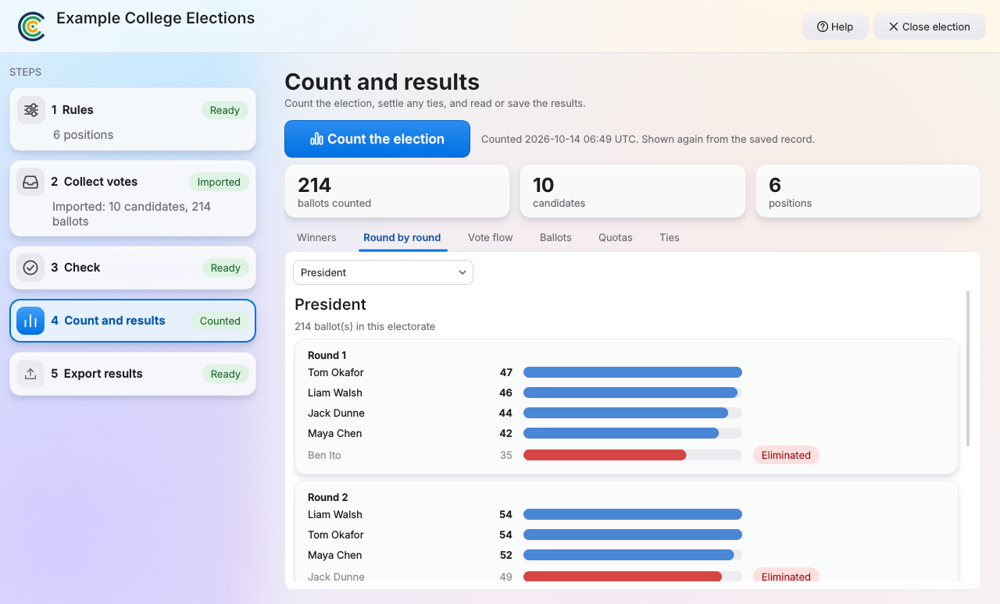

How COLection counts.
Elections are rarely just "most votes wins". Here is what the program does with the ballots, and how anyone can check it.
Watch a count happen.
The lowest candidate drops out and their ballots move to the next choice. Repeat until someone passes the line.
President
200 ballots, five candidates
Needs more than half of the votes still counting
Rules real organisations use.
These are the things the program is built to count correctly.
One seat
Each ballot counts for its highest choice still in the count. The candidate with the fewest votes is excluded and their ballots move on, until someone has a majority.
Many seats
Committees are counted with a quota. Votes beyond the quota are passed on at a reduced value, and the Ballots tab shows what each ballot was worth in every round.
Groups and limits
Cap or reserve places by any group you define, such as gender, year level or international students. The results show which candidates a limit affected.
Ties
Decide in advance: ask the returning officer, draw at random, exclude all together or look back at earlier rounds. Every tie and how it was settled is recorded.
Minimum turnout
If your rules need a minimum share of the roll to vote, the program tracks it and the report says whether it was met.
Roles tied to groups
A position can be open to only some candidates or only some voters, for example a representative chosen by one house.
Checked, not just trusted.
- Round by round. Every tally, every exclusion, and a flow diagram of where votes went.
- Ballot by ballot. Scrutineers can look at any ballot and see where it was counted in each round.
- Count it again. One button counts again from the saved record and confirms the winners are identical.
- Sign off. People sign against a results code. If the election is counted again and anything changes, earlier sign-offs stop applying.
